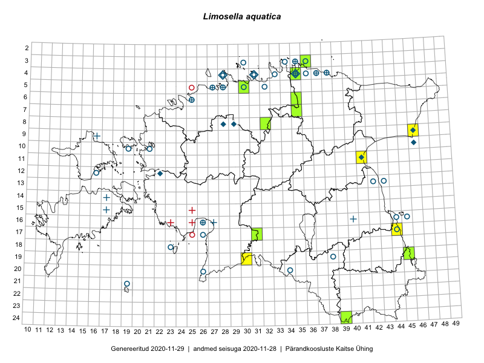

Limosella aquatica — harilik nõgilillik
Scrophulariaceae :: Limosella aquatica L. (97)

Kaart põhineb 99 kirjel:
vaatlusi 23
herbaareksemplare 74
ELFi kirjeid1 2
Taime kaasaegsed ja ajaloolised leiukohad asuvad 45 ruudus.
Tingmärgid ja ruutude arvud periooditi (U2 / V3 )
█ 2006–2020 (12/–)
◆/◇ 1971–2005 (9/5)
○ 1921–1970 (30/22)
+ kuni 1920 (6/8)
× hävinud (–/0)
? kaheldav (–/0)
| Ruut | Leidja(d) | Leiuaeg | Kirje |
|---|---|---|---|
| 12-16 | Haide-Ene Rebassoo | 1957–1984 | ruut/ala: Limosella aquatica L. |
| 09-46 | Heljo Krall, Malle Leht | 1981-09-07 | ruut/ala: Limosella aquatica L. |
| 03-35 | Gustav Vilbaste | 1933 | ruut/ala: Limosella aquatica L. |
| 03-36 | 1935-09-18–1936-08-02 | ruut/ala: Limosella aquatica L. | |
| 04-28 | J. Rebane | 1936–1938 | ruut/ala: Limosella aquatica L. |
| 04-28 | Maret Kask, Linda Viljasoo | 1973-08 | ruut/ala: Limosella aquatica L. |
| 04-35 | 1974-07–1975-08 | ruut/ala: Limosella aquatica L. | |
| 08-29 | H. Krall, M. Leht | 1986-07-24 | ruut/ala: Limosella aquatica L. |
| 16-40 | Glehn | 1860–1938 | ruut/ala: Limosella aquatica L. |
| 11-41 | H. Krall, M. Abakumova | 1985-06-13 | ruut/ala: Limosella aquatica L. |
| 12-22 | H. Krall | 1979–1980 | ruut/ala: Limosella aquatica L. |
| 19-38 | E. Pastak | 1936 | ruut/ala: Limosella aquatica L. |
| 21-19 | Julius Gröntved | 1929 | ruut/ala: Limosella aquatica L. |
| 03-34 | Gustav Vilbaste | 1933 | ruut/ala: Limosella aquatica L. |
| 03-35 | Gustav Vilbaste | 1933 | ruut/ala: Limosella aquatica L. |
| 11-41 | Peedu Saar | 2015-08-22 | ruut/ala: Limosella aquatica L. |
| 11-41 | Peedu Saar | 2015-08-22 | ruut/ala: Limosella aquatica L. |
| 08-32 | Ott Luuk, Peedu Saar | 2016-09-28 | ruut/ala: Limosella aquatica L. |
| 19-30 | Peedu Saar, Ott Luuk | 2016-10-06 | ruut/ala: Limosella aquatica L. |
| 19-30 | Ott Luuk, Peedu Saar | 2016-10-06 | ruut/ala: Limosella aquatica L. |
| 17-31 | Ott Luuk, Toomas Kukk, Sten Mander, Kersti Tambets, Timo Luhamäe | 2017-08-29 | ruut/ala: Limosella aquatica L. |
| 04-35 | Helle Mäemets | 2012-07-11 | ruut/ala: Limosella aquatica L. |
| 09-46 | Peedu Saar, Timo Luhamäe | 2019-09-11 | ruut/ala: Limosella aquatica L. |
| 05-28 | Joh. Aidas | 1910-05-02 | TU259601: Limosella aquatica L. |
| 05-27 | Albert Üksip | 1934-09-20 | TU259602: Limosella aquatica L. |
| 05-27 | Albert Üksip | 1931-08-03 | TU259603: Limosella aquatica L. |
| 05-27 | Albert Üksip | 1931-08-26 | TU259604: Limosella aquatica L. |
| 04-36 | T. Lippmaa | 1932-07-19 | TU259605: Limosella aquatica L. |
| 04-36 | T. Lippmaa | 1932-07-19 | TU259606: Limosella aquatica L. |
| 04-35 | T. Lippmaa | 1932-07-20 | TU259607: Limosella aquatica L. |
| 04-33 | T. Lippmaa | 1932-07-24 | TU259609: Limosella aquatica L. |
| 06-25 | T. Lippmaa | 1932-08-26 | TU259610: Limosella aquatica L. |
| 17-26 | E. Lellep | 1958-07-16 | TU259611: Limosella aquatica L. |
| 17-26 | E. Lellep | 1958-07-16 | TU259612: Limosella aquatica L. |
| 17-26 | L. Pihlapuu | 1958-07-16 | TU259613: Limosella aquatica L. |
| 04-35 | E. Lellep | 1957-08-26 | TU259619: Limosella aquatica L. |
| 17-26 | L. Pihlapuu | 1958-07-16 | TU259620: Limosella aquatica L. |
| 04-28 | L. Pihlapuu | 1973-08-18 | TU259621: Limosella aquatica L. |
| 04-28 | L. Pihlapuu | 1973-08-18 | TU259622: Limosella aquatica L. |
| 16-26 | 1936-08-11 | TU259624: Limosella aquatica L. | |
| 13-43 | 1936-08-28 | TU259625: Limosella aquatica L. | |
| 04-28 | M. Kask | 1973-08-21 | TAA0037756: Limosella aquatica L. |
| 16-40 | H. Kapp | 1857-08-04 | TAA0037757: Limosella aquatica L. |
| 16-27 | Th. Lackschewitz | 1873-08 | TAA0037759: Limosella aquatica L. |
| 08-28 | Vilma Kuusk | 2001-08-09 | TAA0037760: Limosella aquatica L. |
| 05-27 | S. Pärn, Taimi Piin | 1960-08-15 | TAA0037761: Limosella aquatica L. |
| 04-35 | M. Kask, Salme Kask | 1958-08-15 | TAA0037762: Limosella aquatica L. |
| 04-35 | M. Kask, Salme Kask | 1958-08-15 | TAA0037763: Limosella aquatica L. |
| 17-26 | Elli Lellep | 1953-07-16 | TAA0037764: Limosella aquatica L. |
| 13-42 | M. Kask | 1964-07-27 | TAA0037765: Limosella aquatica L. |
| 20-34 | M. Kask | 1965-08-28 | TAA0037766: Limosella aquatica L. |
| 04-38 | M. Kask, Salme Kask | 1958-08-22 | TAA0037767: Limosella aquatica L. |
| 13-42 | Linda Viljasoo | 1958-10-23 | TAA0037768: Limosella aquatica L. |
| 04-37 | Linda Viljasoo | 1958-08-22 | TAA0037769: Limosella aquatica L. |
| 09-46 | Malle Leht | 1981-09-07 | TAA0037770: Limosella aquatica L. |
| 17-44 | Gustav Vilbaste | 1929-07-30 | TAA0037771: Limosella aquatica L. |
| 03-34 | Gustav Vilbaste | 1927-08-04 | TAA0037772: Limosella aquatica L. |
| 21-19 | Gustav Vilbaste | 1932-07-18 | TAA0037773: Limosella aquatica L. |
| 21-19 | Gustav Vilbaste | 1932-07-21 | TAA0037774: Limosella aquatica L. |
| 04-31 | Gustav Vilbaste | 1929-07-03 | TAA0037775: Limosella aquatica L. |
| 04-31 | Gustav Vilbaste | 1922-07-18 | TAA0037776: Limosella aquatica L. |
| 05-30 | Gustav Vilbaste, J. Eplik | 1931-08-20 | TAA0037777: Limosella aquatica L. |
| 04-40 | Gustav Vilbaste | 1932-07-05 | TAA0037778: Limosella aquatica L. |
| 12-16 | Gustav Vilbaste | 1931-08-20 | TAA0037779: Limosella aquatica L. |
| 10-21 | Gustav Vilbaste | 1931-08-24 | TAA0037780: Limosella aquatica L. |
| 04-37 | Linda Viljasoo | 1958-08-22 | TAA0037781: Limosella aquatica L. |
| 20-26 | M. Kask | 1963-08-18 | TAA0037782: Limosella aquatica L. |
| 04-36 | M. Kask, Linda Viljasoo | 1963-06-20 | TAA0037783: Limosella aquatica L. |
| 04-35 | M. Kask | 1975-08-13 | TAA0037784: Limosella aquatica L. |
| 04-37 | R. Lehbert | 1905-07-14 | TAM0062525: Limosella aquatica L. |
| 04-31 | G. Vilbaste | 1922-07 | TAM0029698: Limosella aquatica L. |
| 05-27 | A. Üksip | 1931-08-03 | TAM0029699: Limosella aquatica L. |
| 04-36 | H. Salasoo | 1932-07-19 | TAM0029700: Limosella aquatica L. |
| 04-36 | H. Salasoo | 1932-07-19 | TAM0029701: Limosella aquatica L. |
| 05-28 | G. Vilbaste | 1947-08-19 | TAM0029702: Limosella aquatica L. |
| 03-30 | G. Vilbaste | 1948-07-12 | TAM0029704: Limosella aquatica L. |
| 04-31 | Tõnu Ploompuu | 1991-07-18 | TALL C005905: Limosella aquatica L. |
| 05-27 | Gerhard Pahnsch | 1875-08-24 | TAM0097632: Limosella aquatica L. |
| 05-28 | Gerhard Pahnsch | 1860-07-13 | TAM0097633: Limosella aquatica L. |
| 05-28 | Gerhard Pahnsch | 1861-07-14 | TAM0097634: Limosella aquatica L. |
| 16-40 | Theodor Frese | 1858 | TAM0097636: Limosella aquatica L. |
| 16-40 | Gerhard Pahnsch | 1860-09-30 | TAM0097637: Limosella aquatica L. |
| 08-32 | Peedu Saar, Ott Luuk | 2016-09-28 | TAA0133100: Limosella aquatica L. |
| 07-35 | Sander Laherand, Nele Jõessar, Toomas Kukk | 2016-07-27 | TAA0135752: Limosella aquatica L. |
| 19-45 | Meeli Mesipuu, Thea Kull | 2015-08-19 | TAA0137525: Limosella aquatica L. |
| 06-25 | E. Niclasen | 1902-07-17 | TAM0134048: Limosella aquatica L. |
| 06-25 | E. Niclasen | 1902-07-17 | TAM0134049: Limosella aquatica L. |
| 17-31 | Timo Luhamäe, Toomas Kukk | 2017-08-29 | TAA0141843: Limosella aquatica L. |
| 04-35 | Peedu Saar, Polina Degtjarenko | 2018-07-08 | TAA0146756: Limosella aquatica L. |
| 18-15 | Fichtenberg | 1924–1929 | TAA0117445: Limosella aquatica L. |
| 03-36 | Helle Mäemets | 2008-08-03 | TAA2003787: Limosella aquatica L. |
| 10-46 | Helle Mäemets | 2000-07-24 | TAA2003972: Limosella aquatica L. |
| 24-39 | Thea Kull | 2019-08-13 | TAA0147963: Limosella aquatica L. |
| 05-30 | Thea Kull | 2019-09-05 | TAA0148111: Limosella aquatica L. |
| 06-35 | Toomas Kukk, Rein Kalamees, Kaur Maran | 2019-08-07 | TAA0148666: Limosella aquatica L. |
| 05-32 | T. Lippmaa | 1932-07-22 | TU259608: Limosella aquatica L. |
| 16-45 | K. Eichvald | 1931-08-30 | TU259617: Limosella aquatica L. |
| 07-29;07-30 | Arne Kivistik | 1997-07-17 | ELF: 1207 |
| 06-30;07-30 | Arne Kivistik | 1997-06-12 | ELF: 1208 |
Eestimaa Looduse Fondi (ELF) andmebaas sisaldab inventeeritud koosluste kirjeldusi ja liigiloendeid. Eriti rohkesti on andmeid märgalade kohta.↩︎
Ruutude arv uue atlase andmekogu järgi. Muuhulgas arvestab vanemat herbaariumi, 2005. aasta atlase välitöölehtedelt uuesti digitaliseeritud andmeid jne. Uue atlase andmekogust pärinevad andmed on kaardile kantud siniste sümbolitega.↩︎
Ruutude arv 2005. aasta atlase (Kukk, T., Kull, T., Eesti taimede levikuatlas. Eesti Maaülikool, Põllumajandus- ja Keskkonnainstituut, Tartu, 2005) järgi. Andmeallikana on kasutatud levik.exe programmi, kus igas ruudus on registreeritud vaid uusim leid. Seetõttu on vanemate perioodide kohta andmed puudulikud. Kasutatud levik.exe andmestikus leidub mõningaid kõrvalekaldeid atlase trükis ilmunud versioonist, sagedamini tarnade ja käpaliste seas. Lisaks leidub selles andmestikus valik liike (peamiselt väheste leidudega tulnuktaimed), mille kaarte trükis ei avaldatud. Vana atlase andmed ruutudest, milles ei ole uue atlase andmekogus leide enne 2006. aastat, on kaardil esitatud punaste sümbolitega. Vana atlase andmetel hävinud ja kaheldavaid leiukohti pole hilisemate (taas)leidude põhjal korrigeeritud.↩︎